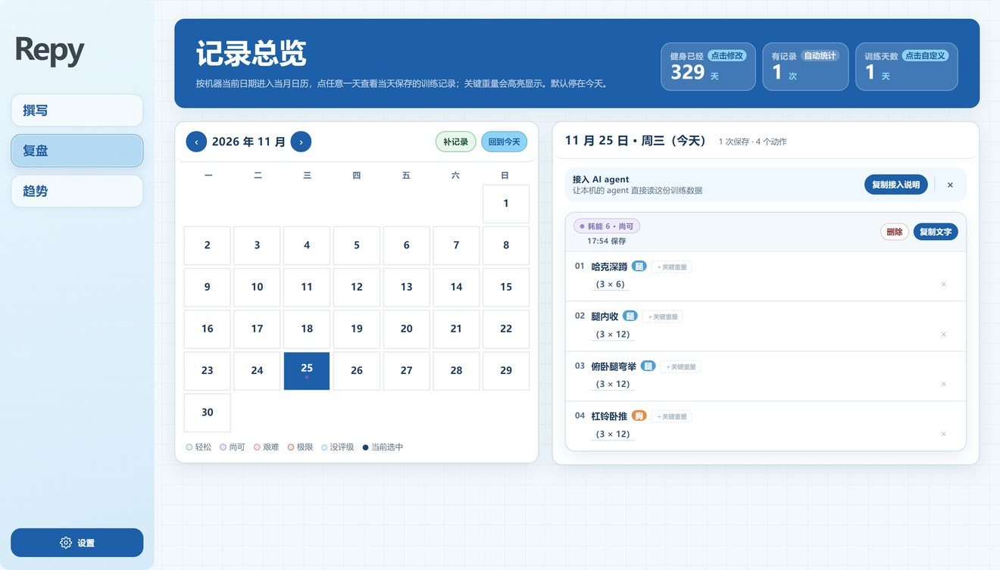
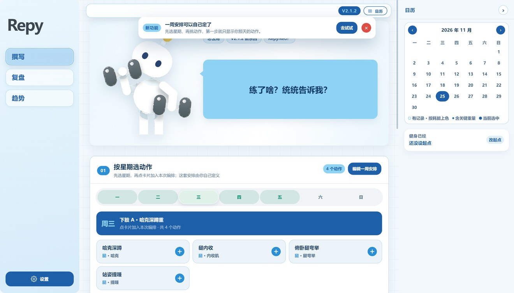

撰写与复盘，
训练记录桌面版
先选星期，再排动作，点一下就记完。
数据全存在你自己电脑上，不上传、不用注册。
下载
Windows 10 / 11 · 64 位

复盘：按天翻记录，哪天练过一眼就看出来

撰写：先选星期，安排好的动作直接点加号
装的时候会弹一次警告
这个应用没有买数字签名证书，所以 Windows 会拦一下。不是病毒，点过去就行。
-
1
双击安装包，出现蓝色的「Windows 已保护你的电脑」窗口。
-
2
点左边的「更多信息」，展开后底部会出现「仍要运行」，点它。
-
3
之后按提示下一步到底。装完桌面上就有 Repy，双击打开。
更新日志
每版的改动和 Repy 自己说的话，装好以后在应用里也能翻。
V2.1.2
2026.11.25
最新
- 导入先去重：同一份 JSON 连导两次，不会再叠出两条一样的记录。发现同一条会先问你——保留我这边的，还是用文件里的覆盖。
- 备份往返不认生：Repy 自己导出的备份再导回来，记录编号和保存时刻都对得上，强度和补记标记也不再丢。
- 偏好只补不抹：导入偏好时，手机上独有的自建动作会留下来，只把缺的补上。
V2.1.1
2026.11.24
- RepyNeo，现已推出。
- 新部位「腹/核心」，被遗忘的他们，终于来了，索引色是浅红。腹部的事情，也要认真对待啊。
- 有氧运动：跑步、爬楼等等，目前可以一并收录进 Repy 中。记录方式和力量训练有区别，快来探索。
- 新增「编辑动作」功能，原来讨厌的自带动作，现在眼不见、心不烦，都可以删掉。
- 照抄某天：一周安排更好用了，现在可以「照抄某天」，周二周四练得一样？现在按一下按钮、双向同步。另外软件默认的安排，现在可以一键删除。
- 新增「plus 步」，轻轻松松？做不动了？给感受一点表达欲。
- 优化：UI 和部分逻辑，更漂亮、更灵光。
V2.1.0
2026.11.24
- 图标与界面：Repy 加入软件，带来焕然一新的应用图标与界面。
- 三个核心页面：撰写、复盘、趋势，构成软件的核心功能。其中，「趋势」是新增功能，帮助健身者更好地查看进步情况。「撰写」界面优化，新增手臂部位。「复盘」中可以查看全部记录，自定义程度大大增加。
- 导入记录：新增「导入功能」，把其他地方的记录通过 AI 翻译成 Repy 能看懂的格式，一键导入，放进「复盘」中。
- 分享软件：新增「分享功能」，独乐乐不如众乐乐，重新打包分享给朋友。安装包放哪里听你的。
- 细节优化：大量 UI、细节优化，期待被发现……
V2.0.0
2026.11.23
- 新增「补记录」：在记录总览的日历上点「补记录」，整月日期全部变绿
- 弹窗告诉你「可以补记录了」；关掉它，在绿色日历上点中哪一天，才会带着那一天跳回「健身记录生成器」
- 主界面底部常驻一条提示：正在补某年某月某日。照常编排动作，按下「保存本次训练」就补进那天，提示立刻消失
- 补记过的记录在总览里带绿色「补记」标记，并直接停在那一天；补错了点「取消补记」就能退出
- 「添加动作」收成动作池标题右侧的小按钮，展开/收起换成面板底部的大按钮
- 总览里的记录可以删：每条记录右上角「删除」（点两次确认），每个动作右侧的「×」可以单删一个动作